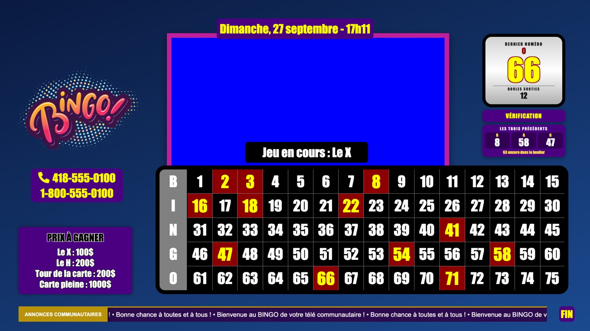
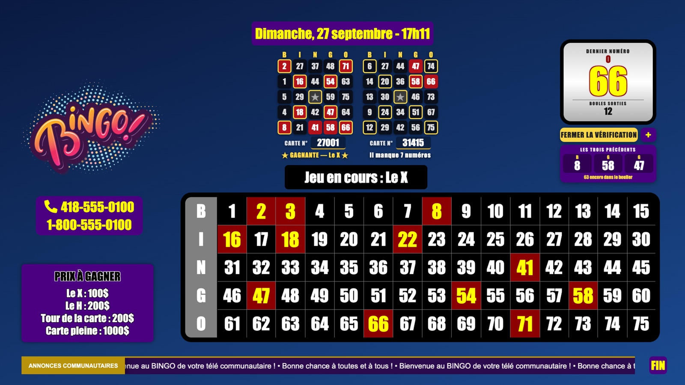
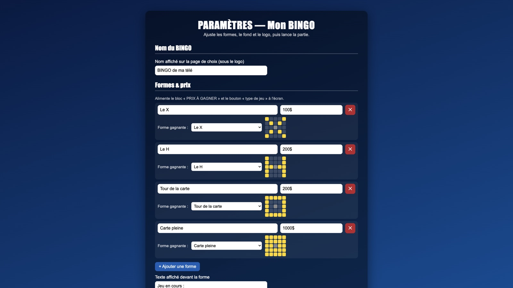
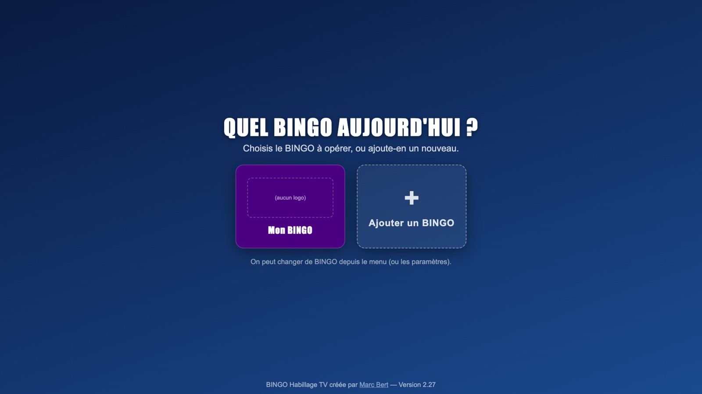

Gratuit · pour les télévisions communautaires
BINGO Habillage TV
Ton boulier, ton animateur, tes cartes papier : rien ne change sur le plateau. À l'écran, par contre, ton bingo a l'air d'une vraie émission — et une carte gagnante se vérifie en quelques secondes, en direct.
Version d'essai 2.27 · Mac (Apple Silicon)
- Le tableau de 1 à 75 Un clic sur chaque numéro qui sort du boulier. Le dernier numéro s'affiche en grand, avec sa lettre, les trois précédents et le nombre de boules encore dans le boulier.
- Vérification en direct Quelqu'un appelle ? Tape le numéro de sa carte : elle s'affiche à l'écran, numéros sortis en rouge, et le logiciel dit si elle est gagnante pour la forme en cours. Jusqu'à 4 cartes côte à côte.
- Tes formes, tes prix Le X, le H, le tour de la carte, la carte pleine, les 4 coins… ou ta propre forme, dessinée case par case. Le bloc « Prix à gagner » suit.
- À tes couleurs Ton logo, ton fond, la couleur des blocs, la zone bleue d'incrustation (position, taille, cadre), ton bandeau d'annonces et tes numéros de téléphone.
- La pause téléphone Un clic sur le bloc téléphone : la zone de l'animateur laisse place à un message (« Nous revenons dans quelques instants ») et à de la musique, le temps de prendre l'appel.
- Journal d'audit Chaque boule, chaque correction, chaque carte vérifiée et chaque gagnante est notée à la seconde près. Un rapport téléchargeable (tableur) pour chaque partie.
- Plusieurs BINGO Un bingo régulier, un bingo spécial, celui d'un partenaire : chacun garde ses propres réglages. Exporte-les en un fichier pour les copier sur un autre Mac.
- Prêt pour la régie Plein écran sur l'écran de ton choix, pas de mise en veille pendant l'émission, et aucune connexion Internet nécessaire.
Une carte vérifiée avant que la personne raccroche
Pendant la vérification, le tableau est verrouillé : impossible d'activer ou d'enlever un numéro par erreur. On referme la vérification, et le jeu continue.



La base de cartes
Pour vérifier une carte, le logiciel doit connaître ses 24 numéros. Il contient une base de cartes papier numérotées de 0 à 36 000, directement dans l'application : aucune connexion, aucune saisie de ta part.
La base correspond aux cartes papier Arrow. Tes cartes viennent d'un autre fournisseur ? Écris-moi : on regardera ensemble.
Télécharger
Le logiciel est offert gratuitement. Pas de compte, pas d'abonnement, pas de fonction bloquée.
Tes réglages sont gardés d'une version à l'autre : une mise à jour remplace l'application, pas tes BINGO.
Installer
Le logiciel n'est pas vendu sur l'App Store : au premier lancement, macOS demande une confirmation. C'est normal, et ça ne se fait qu'une fois.
-
Ouvre le fichier .dmg
Glisse BINGO Habillage TV dans le dossier Applications.
-
Premier lancement
Dans Applications, fais un clic droit sur l'app → Ouvrir → Ouvrir.
Si macOS refuse encore : Réglages Système → Confidentialité et sécurité, tout en bas, bouton « Ouvrir quand même ».
-
Message « l'app est endommagée » ?
Elle ne l'est pas : c'est la façon dont macOS traite une app téléchargée qui ne vient pas de l'App Store. Ouvre le Terminal (Applications → Utilitaires), colle cette ligne, puis appuie sur Entrée :
xattr -dr com.apple.quarantine "/Applications/BINGO Habillage TV.app"Relance l'app : c'est réglé pour de bon.
Mode d'emploi express
-
Choisis ton BINGO
Au départ, il y a « Mon BINGO ». Le bouton + en ajoute d'autres, chacun avec ses réglages.
-
Règle-le une fois
Nom, formes et prix, logo, couleurs, zone bleue d'incrustation, bandeau d'annonces, numéros de téléphone, message de pause, générique de fin. Tout est enregistré sur ton Mac.
-
Lance la partie
LANCER LE BINGO ▶ : l'écran passe en plein écran. Envoie-le vers ta régie, incruste ton animateur sur la zone bleue.
-
Clique chaque numéro qui sort du boulier
Un clic l'allume, un deuxième clic l'éteint (en cas d'erreur). Clique sur « Jeu en cours » pour passer à la forme suivante.
-
Un appel ? VÉRIFICATION
Tape le numéro de la carte, appuie sur Entrée. Le bouton + ajoute une autre carte à côté. Referme la vérification pour reprendre le jeu.
-
FIN
Le bouton FIN affiche ton générique de fin. Le rapport d'audit de la partie se télécharge dans les paramètres (section ADMIN).
Raccourcis : ⌘ , paramètres · ⌘ B changer de BINGO · ⌘ ⇧ D changer d'écran · ⌘ H masquer.
Un mot sur le cadre
BINGO Habillage TV ne tire jamais les numéros. C'est ton boulier, filmé, qui les tire ; la personne à la régie clique ce qui sort. Le logiciel affiche et vérifie — il ne conduit aucun jeu de hasard, et il n'aura jamais de tirage automatique.
Chaque organisme demeure responsable d'obtenir et de respecter sa propre licence de bingo auprès de l'autorité de sa province (au Québec : la Régie des alcools, des courses et des jeux). Ce logiciel est un outil d'habillage, pas un avis juridique.
Essaie-le. Dis-moi. Contribue si ça vaut le coup.
BINGO Habillage TV ne se vend pas. Il est né dans une petite télé communautaire de la Gaspésie et il est offert aux autres. S'il te rend service semaine après semaine, une contribution volontaire, du montant que tu juges juste, aide à le faire vivre — et à finir la base de cartes.
La contribution se fait sur Ko-fi, en quelques secondes, sans créer de compte.